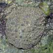
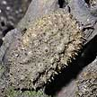

|
|
| molluscs text index | photo index |
| Phylum Mollusca > Class Gastropod > sea slugs |
| Photo
index of sea slugs on Singapore shores slugs without external gills body long, rounded with bumps |
| 4-5 cm. Body hard, with 3-6 ridges of bumps that are blue-grey where they join the body and tipped yellow. Rhinophores yellow. A black stripe along the foot. On coral rubble. Sometimes seen on some of our Southern shores. | 4-5 cm. Body hard with evenly distributed bumps (not clustered or in ridges). Bumps tall and pink to red near the ends, but black where they join the body. Rhinophores black. On coral rubble. Commonly seen on our southern shores. | 4-5 cm. Body hard with coloured bumps that are clustered in groups, the black areas do not form distinct lines or patterns. Rhinophores black. On coral rubble. Sometimes seen on our Southern shores. | About 5 cm. Body hard with white bumps on a yellow body, some bumps with dark circles. Rhinophores yellow. On coral rubble. Uncommon on the intertidal, sometimes seen on our Southern shores. |


 |
 |
 |
 |
|
| 1-3cm. Body long, rounded smooth with tiny bumps. Underside whitish with broad foot. Shady seaweed-covered rocks and sea walls. Commonly seen on many of our shores. | 4-5cm. Body hard, broad and flat with a raised hump along the centre length. Underside greenish or bluish with narrow foot. Rocky shores and seawalls. Commonly seen on many of our shores. | 2-3cm. Body circular or long with small bumps arranged in concentric circles. Grey underside and narrow, ridged foot. On mangrove trees. Sometimes seen in our mangroves. | 3-5cm. Body oval, rounded with ornate texture of bumps with blunt spikes. Underside pale to lemon yellow. Sometimes seen in our mangroves. |
| 2-3cm. Body long, rounded.with regular bumps, sometimes spots. Underside and narrow foot white. Mangrove trees, at night. Sometimes seen on some of our shores. | 4-5cm. Body long with ridges and small bumps. Mottled underside with yellow or orange margin. The narrow foot is orange. On mangrove trees. Sometimes seen in our mangroves. |
These are NOT sea slugs


| how to tell apart |
photo
index of
molluscs on this site
|